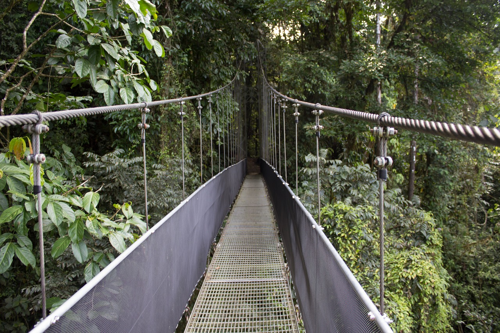
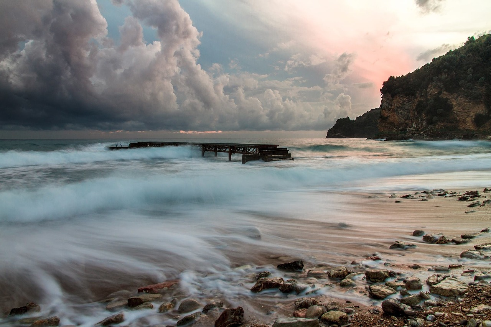

Places


Singapore,also known as the merlion city, is a multicultural nation.Subsequently,It’s a wonderful place for foodies. Not only does it have a great variety of food to eat there but also it has a numerous number of places worth visiting . It is necessary that if you are planning to visit singapore you should have a plan of staying there for at least 3 days. There’s something for everyone-explorer,foodies,action seekers and the socializers.
Bangkok, a city in Thailand, which still maintain its historical architecture and traditions dating back hundreds of years. It has a blend of it’s tradition with the modern era ,which can be observed through the buildings and places.It’s One of the world’s great shopping cities and has long opening hours , making it a wonderful place for shoppers.It’s a place where you can get luxury at a bargain price.Definitely a place highly recommended for leisure-seekers.
The city of Agra has an indelible mark on the global map as home to one of the Seven Wonders of the World, the Taj Mahal. Enjoy the city life alongside the multitude of architectural wonders.With Taj Mahal's awe-inspiring beauty, no one comes away disappointed.
 CheeHueyWong pexel
CheeHueyWong pexel
“Jewel city in the southern hemisphere crown with its beautiful Opera House and Harbour Bridge” - says Eire-ette One of the most beautiful cities in the world, where the iconic sydney opera house resides.A great place for socializing and shopping.It has tons of cafe and restaurantsThere are zoos and aquarium within the city itself ,which makes it a wonderful place to go with your families.
 Kalai
Kalai
 Kalai
Kalai
Tired of the city ambience.Try travelling to a place created by god just for thrill seekers and nature enthusiast;Costa Rica . From Hiking to Biking ,this is a wonderland for people who wants to get adventurous.It has spectacular sceneries; from primordial-looking shores to nature parks.
BelaMarie pixabay jeremy924 pixabayMontenegro might be small,but this gorgeous nation has a huge array of natural and man-made wonders. A great place to relax stressed out minds.Mountainous hinterland nestles deep canyons, gushing rivers, glacial lakes and primeval forest,popular for adventure activity making it an good option for nature & adventure seekers.
dm_bor0 pixabayCairo is chaos at its most magnificent, infuriating and beautiful. From above, the distorted roar of the muezzins' call to prayer echoes out from duelling minarets. Below, car horns bellow tuneless symphonies amid avenues of faded 19th-century grandeur while donkey carts rattle down dusty lanes lined with colossal Fatimid and Mamluk monuments.
 jma659 pixabay
shadyshaker pixabay
jma659 pixabay
shadyshaker pixabay
A coming-together of cultures, cuisines and landscapes, there's nowhere quite like Cape Town, a singularly beautiful city crowned by the magnificent Table Mountain National Park.
HPBotha pixabay